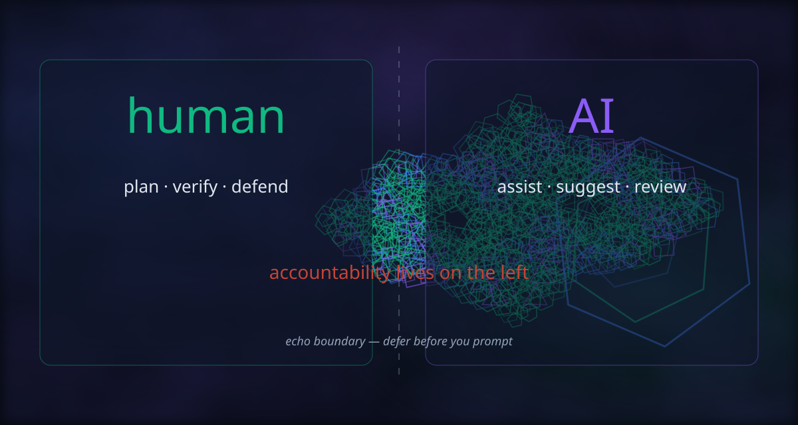

Instructor base · anonymized by cohort · 2026-10-25
A systematic reading of how each seam controlled AI assistance: disclosure quality, verification, rejects, and learning signs — scored against your Unit 6 / Oral Defence rubric axes — as a base for human qualification.
The course does not grade “AI volume.” It grades corrective competence: can the human disclose help, verify the diff, reject bad advice, and defend ownership? That is the Unit 6 studio test — keep an ACCEPT/REJECT log and defend decisions — and the Practical Guide’s verification checklist.
| Cohort | Seam | Tip Mean Σ | Signs /16 | Draft AI 0–10 |
|---|---|---|---|---|
| E1 Content | Content | 96 | 15 | 9.0 |
| E2 Graph | Graph | 96 | 9 | 6.5 |
| E3 Oracle | Oracle | 94 | 8 | 6.0 |
| E4 PWA | PWA | 96 | 14 | 9.0 |
| E5 Accounts | Accounts | 92 | 12 | 8.0 |
Draft AI 0–10 = signs/16 mapped to rubric bands (≈ ×0.625). Human override expected.
Each sign scored 0 (absent) · 1 (partial) · 2 (clear) from PR bodies, memos, and Moodle M2 text.
| Sign | E1 | E2 | E3 | E4 | E5 |
|---|---|---|---|---|---|
| S1 — AI Review Log on tip PRs | 2 | 2 | 2 | 2 | 2 |
| S2 — Verification named (test / cmd / browser) | 2 | 2 | 1 | 2 | 2 |
| S3 — Explicit REJECT / non-accept + reason | 2 | 1 | 1 | 2 | 2 |
| S4 — AI-run vs human-run distinguished | 1 | 1 | 1 | 2 | 1 |
| S5 — Plan / defer before code | 2 | 1 | 1 | 1 | 1 |
| S6 — Mutation / adversarial self-check | 2 | 0 | 0 | 1 | 0 |
| S7 — M2 cites concrete control | 2 | 1 | 0 | 1 | 2 |
| S8 — Extended artifact (memo / decision) | 2 | 0 | 0 | 2 | 0 |
| Total | 15 | 9 | 8 | 14 | 12 |

Strongest alignment of product work and metacognition. Logs name mutation tests (break the test deliberately to prove it bites). M2 names the ritual explore → plan → wait for approval that caught stale task sheets. Design-decision #68 documents a rejected alternative with file/line evidence.
Tip Mean Σ matches Content, but AI-control signs are thinner: logs are present and verification commands listed, yet REJECT trails and M2 depth are lighter. M2 honesty (“hard to use AI as the main tool”) is useful data — it is not the same as demonstrated critique of model suggestions.
Cumulative tip #42 includes a richer log schema (tool / verified / changed / uncertain). Moodle M2 is minimal. Product seam is complete; AI-critical narration did not keep pace.
Best process artifact in the cohort: docs/uso-ia-team-4.md (#74) with a concrete
REJECT (drop tsc from the compatibility monitor). Multiple logs honestly state that
the assistant ran checks the human did not claim — that is Verify, not a confession of failure.
M2 describes the AI Review Log as the thing that forced thinking; gives a domain example (session cookie vs API token) where a working AI suggestion was refused for architectural fit. Tip scores slightly lower than peers; AI-control narrative is strong.
Qualitative volume (not token counts) from declarations:
| Cohort | Declared intensity | Learning use | Control maturity |
|---|---|---|---|
| E1 | High, constrained | Scaffold + tests; human owns mutations | High |
| E2 | Present but resisted as “main tool” | Implementation + PR text | Medium |
| E3 | Wanted less; relies on agents.md | Context maintenance more than critique | Medium-low |
| E4 | Very high (Claude Code / Codex) | Lifecycle teaching + repair loops | High (documented) |
| E5 | High on rebuilds | Auth/library rebuilds; human curl checks | High on Critique |
Intensity alone does not predict the draft mark. E4’s high volume is redeemed by REJECT + honesty; E3’s desire for “less IA” without a rich reject log still scores lower on Critique.